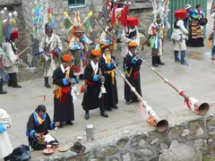

非遗图鉴 / 岁时节令
10
非遗图鉴 · 民俗
岁时节令
民俗 · 183 项、492 子项 · 第 3 / 4 页（Ⅹ-121 至 Ⅹ-180）
每一条只列名录上的事实：编号、名称、申报地区或单位、公布年份和批次。详情看中国非物质文化遗产网的官方页。在名录检索里查这一门类 →
- Ⅹ-121
藏族天文历算
- 西藏自治区2008 第二批 · 新增项目官方页 →
- Ⅹ-122
- Ⅹ-123
- Ⅹ-124
俄罗斯族巴斯克节
- 内蒙古自治区额尔古纳市2011 第三批 · 新增项目官方页 →
- Ⅹ-125
鄂温克族瑟宾节
- 黑龙江省讷河市2011 第三批 · 新增项目官方页 →
- Ⅹ-126
诺茹孜节
- 新疆维吾尔自治区塔城地区2011 第三批 · 新增项目官方页 →
- Ⅹ-127
- Ⅹ-128
土家年
- 湖南省永顺县2011 第三批 · 新增项目官方页 →
- Ⅹ-129
彝族年
- 四川省凉山彝族自治州2011 第三批 · 新增项目官方页 →
- Ⅹ-130
侗年
- 贵州省榕江县2011 第三批 · 新增项目官方页 →
- Ⅹ-131
藏历年
- 西藏自治区拉萨市2011 第三批 · 新增项目官方页 →
- Ⅹ-132
舜帝祭典
- 湖南省宁远县2011 第三批 · 新增项目官方页 →
- Ⅹ-133
祭寨神林
- 云南省元阳县2011 第三批 · 新增项目官方页 →
- Ⅹ-134
- Ⅹ-135
尉村跑鼓车
- 山西省襄汾县2011 第三批 · 新增项目官方页 →
- Ⅹ-136
独辕四景车赛会
- 山西省平顺县2011 第三批 · 新增项目官方页 →
- Ⅹ-137
网船会
- 浙江省嘉兴市秀洲区2011 第三批 · 新增项目官方页 →
- Ⅹ-138
月也
- 贵州省黎平县2011 第三批 · 新增项目官方页 →
- Ⅹ-139
婚俗
- 婚俗（朝鲜族回婚礼）吉林省延边朝鲜族自治州2011 第三批 · 新增项目官方页 →
- 婚俗（达斡尔族传统婚俗）黑龙江省齐齐哈尔市富拉尔基区2011 第三批 · 新增项目官方页 →
- 婚俗（彝族传统婚俗）四川省美姑县2011 第三批 · 新增项目官方页 →
- 婚俗（裕固族传统婚俗）甘肃省张掖市2011 第三批 · 新增项目官方页 →
- 婚俗（回族传统婚俗）宁夏回族自治区2011 第三批 · 新增项目官方页 →
- 婚俗（哈萨克族传统婚俗）新疆维吾尔自治区伊犁哈萨克自治州2011 第三批 · 新增项目官方页 →
- 婚俗（锡伯族传统婚俗）新疆嘎善文化传播中心2011 第三批 · 新增项目官方页 →
- 婚俗（赫哲族婚俗）黑龙江省同江市2014 第四批 · 扩展项目官方页 →
- 婚俗（畲族婚俗）浙江省景宁畲族自治县2014 第四批 · 扩展项目官方页 →
- 婚俗（畲族婚俗）福建省霞浦县2014 第四批 · 扩展项目官方页 →
- 婚俗（瑶族婚俗）广东省连南瑶族自治县2014 第四批 · 扩展项目官方页 →
- Ⅹ-140
径山茶宴
- 浙江省杭州市余杭区2011 第三批 · 新增项目官方页 →
- Ⅹ-141
装泥鱼习俗
- 广东省珠海市斗门区2011 第三批 · 新增项目官方页 →
- Ⅹ-142
- Ⅹ-143
柯尔克孜族驯鹰习俗
- 新疆维吾尔自治区阿合奇县2011 第三批 · 新增项目官方页 →
- Ⅹ-144
塔吉克族服饰
- 新疆维吾尔自治区塔什库尔干塔吉克自治县2011 第三批 · 新增项目官方页 →
- Ⅹ-145
望果节
- 西藏自治区2014 第四批 · 新增项目官方页 →

Monks playing on Tibetan horn during Tibetan summer festival Ongkor, 2016图：Andelicek.andy / CC BY-SA 4.0 / 维基共享资源。本站已缩放裁切，按 CC BY-SA 4.0 同样许可共享。 - Ⅹ-146
苗族花山节
- 云南省屏边苗族自治县2014 第四批 · 新增项目官方页 →
- Ⅹ-147
察干苏力德祭
- 内蒙古自治区乌审旗2014 第四批 · 新增项目官方页 →
- Ⅹ-148
博格达乌拉祭
- 内蒙古自治区扎赉特旗2014 第四批 · 新增项目官方页 →
- Ⅹ-149
稻作习俗
- 江西省万年县2014 第四批 · 新增项目官方页 →
- Ⅹ-150
仡佬族三幺台习俗
- 贵州省道真仡佬族苗族自治县2014 第四批 · 新增项目官方页 →
- Ⅹ-151
匾额习俗
- 匾额习俗（赣南客家匾额习俗）江西省会昌县2014 第四批 · 新增项目官方页 →
- Ⅹ-152
马仙信俗
- 福建省柘荣县2014 第四批 · 新增项目官方页 →
- Ⅹ-153
寮步香市
- 广东省东莞市2014 第四批 · 新增项目官方页 →
- Ⅹ-154
达斡尔族服饰
- 内蒙古自治区呼伦贝尔市2014 第四批 · 新增项目官方页 →
- Ⅹ-155
鄂温克族服饰
- 内蒙古自治区陈巴尔虎旗2014 第四批 · 新增项目官方页 →
- Ⅹ-156
- Ⅹ-157
布依族服饰
- 贵州省2014 第四批 · 新增项目官方页 →
- Ⅹ-158
侗族服饰
- 贵州省黔东南苗族侗族自治州2014 第四批 · 新增项目官方页 →
- Ⅹ-159
柯尔克孜族服饰
- 新疆维吾尔自治区乌恰县2014 第四批 · 新增项目官方页 →
- Ⅹ-160
朝鲜族百种节
- 吉林省延边朝鲜族自治州龙井市2021 第五批 · 新增项目官方页 →
- Ⅹ-161
瑶族祝著节
- 广西壮族自治区河池市巴马瑶族自治县2021 第五批 · 新增项目官方页 →
- Ⅹ-162
壮族侬峒节
- 广西壮族自治区崇左市2021 第五批 · 新增项目官方页 →
- Ⅹ-163
秀山苗族羊马节
- 重庆市秀山土家族苗族自治县2021 第五批 · 新增项目官方页 →
- Ⅹ-164
矻扎扎节
- 云南省红河哈尼族彝族自治州元阳县2021 第五批 · 新增项目官方页 →
- Ⅹ-165
特懋克节
- 云南省西双版纳傣族自治州2021 第五批 · 新增项目官方页 →
- Ⅹ-166
三多节
- 云南省丽江市玉龙纳西族自治县2021 第五批 · 新增项目官方页 →
- Ⅹ-167
普米族拈达则封山仪式
- 云南省丽江市宁蒗彝族自治县2021 第五批 · 新增项目官方页 →
- Ⅹ-168
阔时节
- 云南省怒江傈僳族自治州泸水市2021 第五批 · 新增项目官方页 →
- Ⅹ-169
祭典
- 祭典（老子祭典）河南省周口市鹿邑县2021 第五批 · 新增项目官方页 →
- Ⅹ-170
祭祀兄弟公出海仪式
- 海南省琼海市2021 第五批 · 新增项目官方页 →
- Ⅹ-171
赫哲族乌日贡大会
- 黑龙江省佳木斯市同江市2021 第五批 · 新增项目官方页 →
- Ⅹ-172
龙神赛会
- 甘肃省甘南藏族自治州临潭县2021 第五批 · 新增项目官方页 →
- Ⅹ-173
放河灯
- 放河灯（松花江放河灯）吉林省吉林市2021 第五批 · 新增项目官方页 →
- Ⅹ-174
腊八节习俗
- 浙江省2021 第五批 · 新增项目官方页 →
- Ⅹ-175
炼火
- 浙江省金华市磐安县2021 第五批 · 新增项目官方页 →
- Ⅹ-176
壮族会鼓习俗
- 广西壮族自治区南宁市马山县2021 第五批 · 新增项目官方页 →
- Ⅹ-177
大安校水柜习俗
- 广西壮族自治区贵港市平南县2021 第五批 · 新增项目官方页 →
- Ⅹ-178
敬老习俗
- 敬老习俗（壮族补粮敬老习俗）广西壮族自治区河池市巴马瑶族自治县2021 第五批 · 新增项目官方页 →
- Ⅹ-179
徐州伏羊食俗
- 江苏省徐州市2021 第五批 · 新增项目官方页 →
- Ⅹ-180
德都蒙古全席
- 青海省海西蒙古族藏族自治州德令哈市2021 第五批 · 新增项目官方页 →